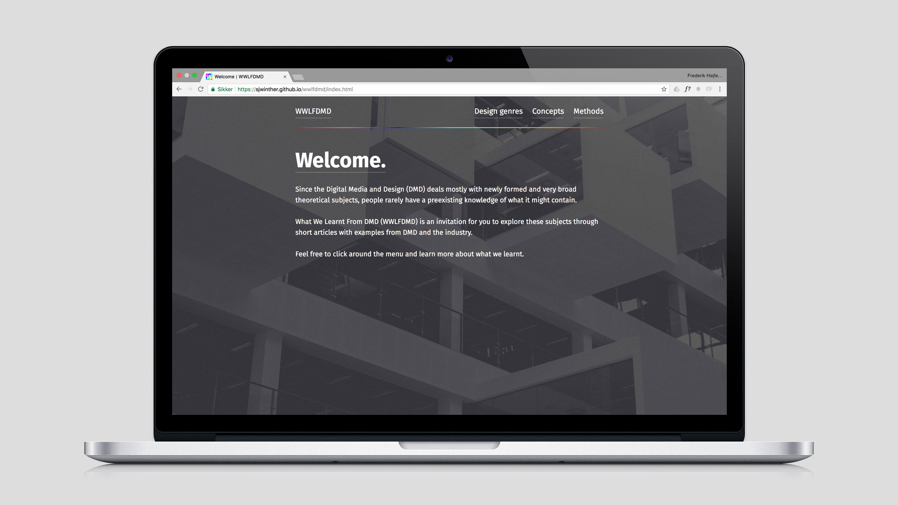
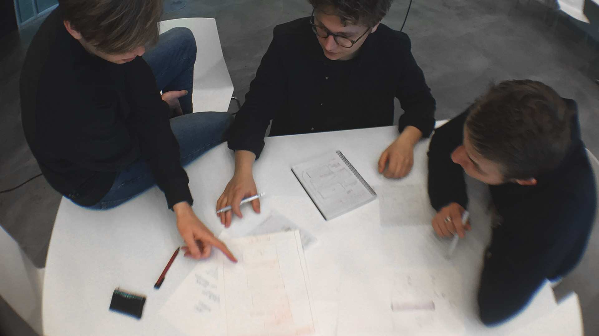

The field of digital design is rapidly growing and as such, it is vital for emerging designers to acquire a set of skills, tools, methods, theories and knowledge that can help them cater to this need. The Digital Media and Design (DMD) programme on the IT University does just that. As students ourselves (motiviation) on the programme we found ourselves in need of an encyclopedia or/and tool-box of what we learnt from DMD. This was highly reflected through an empathy phase with other students.
WWLFDMD became an invitation for fellow students and like-minded to explore these subjects through short articles with examples from DMD and the industry to better communicate and navigate in an evolving designerly practice.
What We Learnt From DMD
Year: Fall 2016
Academic work: Group based project
My role: Visual language, UX research, sketching and prototyping
What We Learnt From DMD (WWLFDMD) is a high fidelity prototype showcasing an online encyclopedia for fellow students to use. It's a quick overview of relevant theory, methods, and tools from the bachelor, Digital Media and Design, we as designers (and students) have been involved in.

Challenge
Process
Our process roughly follows the principles and fluid phases of Design Thinking. We started the process by gaining empathy with our users – students – by doing interviews and defining problem statements and design principles from those insights. We used the statements as drivers for our ideation process which led to lo-fi and hi-fi prototyping and testing.
Throughout this process we have made use of tools and methods such as sketching, wire framing, mockups, card sorting and usability testing interactive prototypes. A project report with reflections on our own design practice was written afterwards.

Learnings
Even though we have all finished our BSc degree’s in DMD, the process of designing WWLFDMD has given us newfound clarity regarding the knowledge we have attained through the DMD programme - a testament to the relevance of a website like that which we have created.